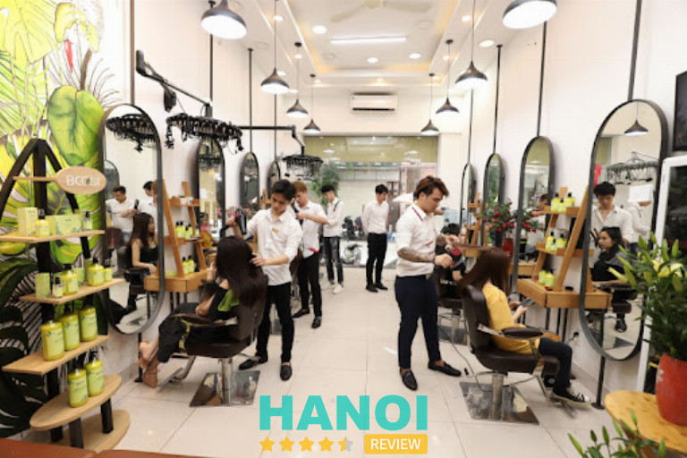
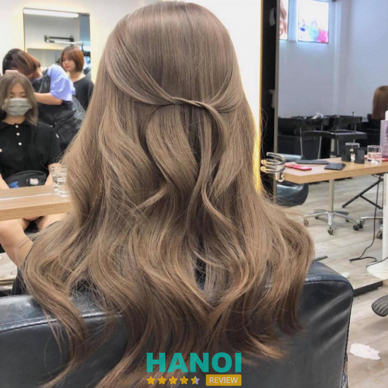
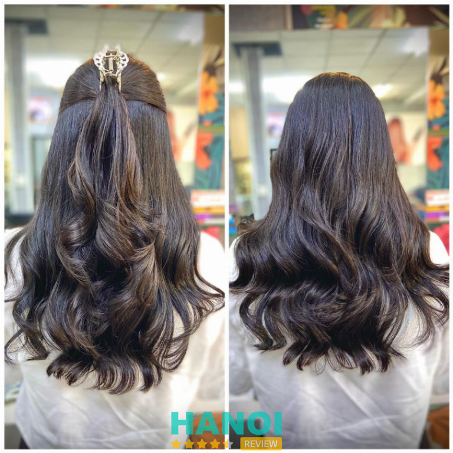
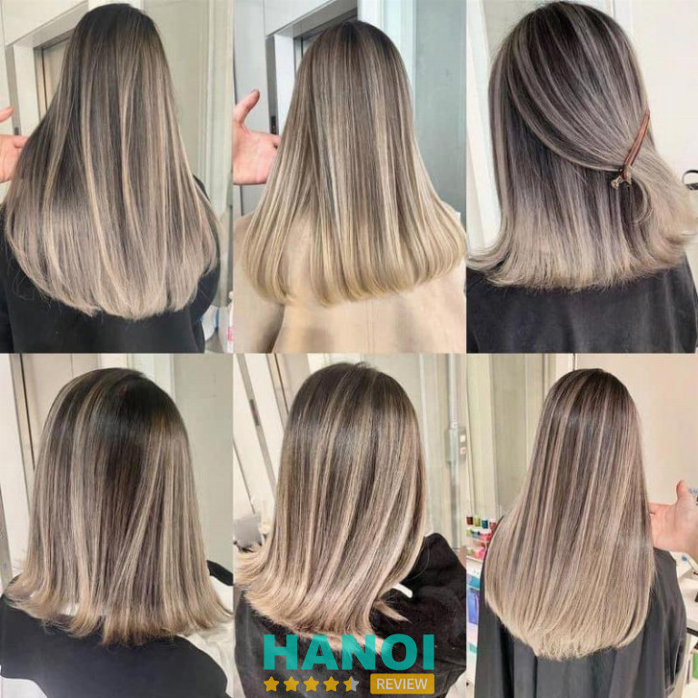
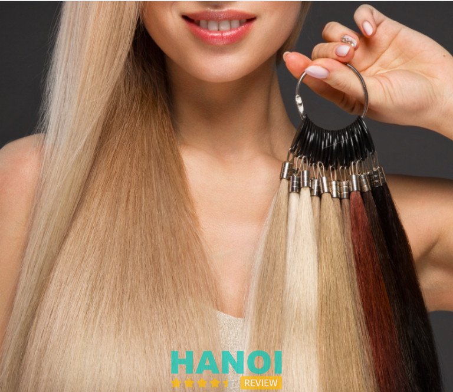
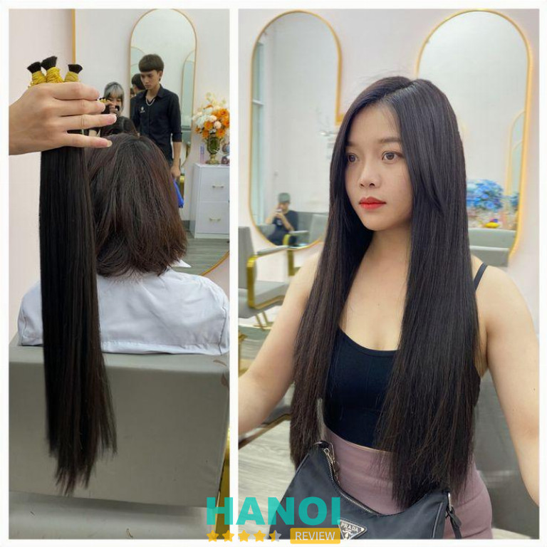

10 Địa chỉ nối tóc đẹp tại Hà Nội uy tín, không làm bạn thất vọng
Đối với nhiều chị em phụ nữ, mái tóc không chỉ là “góc con người” mà còn là biểu tượng của sự quyến rũ và cá tính. Do đó, việc tìm kiếm một địa chỉ nối tóc đẹp và uy tín tại Hà Nội hiện đã trở thành nhu cầu thiết yếu, giúp mọi người hoàn thiện vẻ ngoài và tự tin tỏa sáng trong mọi hoàn cảnh.
Top 10 Địa chỉ nối tóc đẹp ở Hà Nội uy tín, chất lượng hàng đầu
Sự đầu tư vào mái tóc không chỉ giúp tôn vinh vẻ đẹp về ngoại hình mà còn giúp nâng cao tinh thần và sự tự tin cho mỗi người. Với danh sách 10 địa chỉ nối tóc đẹp và chất lượng tại Hà Nội được giới thiệu bởi HaNoiReview sẽ giúp bạn dễ dàng lựa chọn được cơ sở phù hợp với nhu cầu, từ đó mang lại mái tóc đúng theo sở thích và phong cách cá nhân.
Mẹ Ớt Hair Salon – Q. Đống Đa
Mẹ Ớt Hair Salon là một trong những địa chỉ làm đẹp mái tóc được yêu thích nhất tại Hà Nội. Salon này nổi tiếng với dịch vụ nối tóc chất lượng cao và sự chuyên nghiệp trong cách phục vụ, đảm bảo an toàn và tính thẩm mỹ cao cho mỗi mái tóc của khách hàng.

Một số lý do giúp cho Mẹ Ớt trở thành địa điểm nối tóc được tin cậy nhất đó là:
- Công nghệ nối tóc tiên tiến: Mẹ Ớt Hair Salon luôn cập nhật những phương pháp và công nghệ mới nhất trong lĩnh vực nối tóc, từ đó mang lại những trải nghiệm tốt nhất cho khách hàng mà không làm ảnh hưởng đến chất lượng tóc tự nhiên.
- Sản phẩm an toàn, chất lượng cao: Mọi sản phẩm sử dụng cho dịch vụ nối tóc tại salon đều được lựa chọn kỹ lưỡng, đảm bảo an toàn và phù hợp với nhiều loại tóc, giúp khách hàng có được vẻ đẹp tự nhiên và bền lâu.
- Đội ngũ nhân viên tay nghề cao: Các stylists tại Mẹ Ớt Hair Salon không chỉ có tay nghề giỏi mà còn được đào tạo bài bản, sẵn sàng lắng nghe và thấu hiểu nhu cầu của khách hàng để tạo ra những mái tóc đẹp và phù hợp nhất.
Chính vì những ưu điểm trên mà Salon Mẹ Ớt không chỉ là nơi để bạn làm đẹp mà còn là nơi bạn có thể tìm thấy sự thoải mái và tin tưởng khi giao phó mái tóc của mình cho đội ngũ chuyên gia. Khách hàng đến với Mẹ Ớt Hair Salon sẽ được trải nghiệm một dịch vụ nối tóc chuyên nghiệp, tận tâm và hoàn toàn hài lòng với kết quả cuối cùng mà mình nhận được.
Thông tin liên hệ:
- Địa chỉ: 36A Trần Quang Diệu, P. Chợ Dừa, Q. Đống Đa, Hà Nội
- Điện thoại: 0824 158 866
- Fanpage: FB.com/me.ot.hair.salon
Salon tóc Vivi – Q. Cầu Giấy
Salon Tóc Vivi tọa lạc tại trung tâm thành phố, là một trong những địa chỉ uy tín cho dịch vụ nối tóc tại Hà Nội. Nổi tiếng với đội ngũ thợ làm tóc giàu kinh nghiệm và tận tâm, Vivi luôn là lựa chọn hàng đầu cho những ai muốn làm mới mình với mái tóc dài, dày và quyến rũ.
Với đội ngũ thợ tóc tay nghề cao, hoạt động lâu năm trong nghề, Salon Tóc Vivi cam kết mang đến cho khách hàng những dịch vụ nối tóc chất lượng nhất. Các thợ làm tóc tại đây không chỉ giỏi về kỹ thuật mà còn rất tận tâm và chu đáo, luôn sẵn sàng lắng nghe và hiểu rõ nhu cầu của từng khách hàng để đưa ra những giải pháp tốt, phù hợp nhất.
Ngoài ra, Salon cũng luôn tìm kiếm và áp dụng các phương pháp nối tóc tiên tiến và sử dụng các sản phẩm an toàn, nhẹ nhàng với da đầu và tóc tự nhiên. Các kỹ thuật nối tóc tại đây bao gồm: nối micro bead, nối tóc bằng keo keratin và nối tóc bằng sợi, đảm bảo mái tóc sau khi nối của bạn sẽ có độ dài tự nhiên và sự bền chắc theo thời gian.
Thông tin liên hệ:
- Địa chỉ: 245 Tô Hiệu, P. Dịch Vọng, Q. Cầu Giấy, Hà Nội
- Điện thoại: 024 6675 5607
- Fanpage: Fb.com/vivi245tohieucaugiay
GỢI Ý: 10 Địa chỉ nối mi tại Hà Nội đẹp tự nhiên, chuyên nghiệp, giá tốt
Nối tóc 24H – Q. Cầu Giấy
Nối Tóc 24H là một trong những salon nối tóc hàng đầu được nhiều người ưa chuộng tại Hà Nội, nhờ vào đội ngũ nhân viên chuyên nghiệp và giàu kinh nghiệm. Salon này không chỉ cung cấp dịch vụ nối tóc chất lượng cao mà còn đảm bảo sự thoải mái tối đa cho khách hàng trong suốt quá trình thực hiện.
Tại Nối Tóc 24H, mỗi nhân viên đều được đào tạo bài bản và có nhiều năm kinh nghiệm trong nghề, giúp họ hiểu rõ các kỹ thuật nối tóc và biết cách tạo ra những mái tóc đẹp, tự nhiên nhất cho khách hàng. Ngoài ra, Salon còn đầu tư áp dụng các công nghệ nối tóc tiên tiến, giúp cho quá trình nối trở nên nhẹ nhàng mà không gây ra cảm giác đau đớn hay nặng đầu. Điều này đặc biệt quan trọng trong việc giúp khách hàng cảm thấy thoải mái khi trải nghiệm dịch vụ nối tóc kéo dài nhiều giờ.

Đặc biệt hơn, tất cả tóc được sử dụng tại salon đều là tóc thật 100%, được thu mua từ những người có mái tóc đẹp, chắc khỏe. Bên cạnh đó, dù luôn đảm bảo về dịch vụ chất lượng cao, Nối Tóc 24H vẫn giữ được mức giá cả phải chăng, phù hợp với nhiều đối tượng khách hàng, kể cả sinh viên.
Thông tin liên hệ:
- Địa chỉ: 53 Trung Kính, P. Trung Hòa, Q. Cầu Giấy, Hà Nội
- Điện thoại: 0767 418 888
- Email: lebaminh666888@gmail.com
- Fanpage: FB.com/Noitoc24h.hanoi
Sancy Salon – Q. Hoàng Mai
Sancy Salon đã nhanh chóng trở thành một trong những địa chỉ nối tóc đáng tin cậy tại Hà Nội. Được biết đến với đội ngũ chuyên gia tạo mẫu tóc đầy tài năng và đam mê. Mỗi chuyên gia tại đây có ít nhất 6 năm kinh nghiệm trong ngành, đảm bảo rằng mỗi dịch vụ được thực hiện với sự chuyên nghiệp và tâm huyết cao nhất.
Về kỹ thuật nối tóc, Sancy Salon nổi bật với việc thực hiện tỉ mỉ và cẩn thận. Các kỹ thuật viên tại salon sử dụng chỉ nối chất lượng cao để tạo ra mối nối chắc chắn mà vẫn đảm bảo không lộ, không vướng víu, không làm hư tổn tóc thật và không hại da đầu. Kỹ thuật này không chỉ giúp khách hàng có được mái tóc dài tự nhiên mà còn đảm bảo an toàn và tạo sự thoải mái trong quá trình sử dụng.

Bên cạnh dịch vụ nối tóc, Sancy Salon còn cung cấp đa dạng các dịch vụ làm tóc khác bao gồm cắt tóc, uốn tóc, nhuộm tóc và hấp tóc. Mỗi dịch vụ đều được thực hiện dựa trên sự hiểu biết sâu sắc về xu hướng thời trang tóc hiện đại và nhu cầu cá nhân của khách hàng.
Thông tin liên hệ:
- Địa chỉ: 49 Ngõ 130 Ngũ Nhạc, P. Thanh Trì, Q. Hoàng Mai, Hà Nội
- Điện thoại: 0974 484 121
- Email: sancysalon@gmail.com
- Website: sancysalon.com
- Facebook: FB.com/SancyHairSalon
GỢI Ý: 10 Trung tâm dạy nghề Nail tại Hà Nội tốt nhất, ra nghề làm ngay
Tanya Hair Luxury – Q. Hai Bà Trưng
Tanya Hair Luxury không chỉ là một cái tên nổi tiếng trong làng làm đẹp tóc với hơn 22 năm hoạt động trong ngành. Được sáng lập bởi nhà tạo mẫu tóc Lan Nguyễn, Tanya Hair Luxury đã phát triển từ một salon nhỏ thành một địa điểm làm đẹp tóc hàng đầu, nơi được nhiều ngôi sao và người nổi tiếng tin tưởng và lựa chọn.
Tại Tanya Hair Luxury, công nghệ nối tóc luôn được cập nhật để phù hợp với xu hướng quốc tế. Đặc biệt, salon hiện đang áp dụng công nghệ nối lông vũ móc sợi kim lông vũ – một kỹ thuật tiên tiến giúp mái tóc nối có độ bền cao, đẹp tự nhiên mà không gây hại cho tóc thật hay da đầu. Công nghệ này đòi hỏi sự tỉ mỉ và kỹ thuật cao, làm nổi bật sự khác biệt của Tanya Hair so với các salon khác.

Ngoài ra, Tanya Hair Luxury còn là nơi được rất nhiều nghệ sĩ nổi tiếng tin tưởng, trong đó có Hoa hậu Mai Phương Thúy, DJ Tit và Hoàng Thùy Linh. Sự tin tưởng từ các nghệ sĩ này không chỉ phản ánh chất lượng dịch vụ mà còn minh chứng cho kinh nghiệm và uy tín của Tanya Hair Luxury trong ngành làm đẹp tóc, đặc biệt là nối tóc.
Thông tin liên hệ:
- Địa chỉ: 8 Bùi Thị Xuân, P. Bùi Thị Xuân, Q. Hai Bà Trưng, Hà Nội
- Điện thoại: 024 2212 5355
- Email: tanyabeauty33@gmail.com
- Website: tanyahair.vn
- Fanpage: Fb.com/tanyahairluxury
Tiệp Nguyễn Hair Salon – Q. Hoàn Kiếm
Tiệp Nguyễn Hair Salon là một trong những địa chỉ nổi bật tại Hà Nội, nơi được biết đến với dịch vụ nối tóc chất lượng cao. Tại Tiệp Nguyễn Hair Salon áp dụng các phương pháp nối tóc hiện đại nhất, bao gồm nối tóc không sử dụng nhiệt và không cần đến hóa chất gây hại, giúp bảo vệ tóc thật của khách hàng. Salon này cũng sử dụng các loại tóc nối chất lượng cao, được nhập khẩu từ các nguồn uy tín, đảm bảo rằng tóc nối sẽ có vẻ ngoài tự nhiên, mềm mại và bóng mượt.
Tiệp Nguyễn Hair Salon không chỉ chú trọng vào chất lượng dịch vụ mà còn đặc biệt quan tâm đến trải nghiệm của khách hàng. Salon cung cấp một không gian thoải mái và thư giãn, nơi khách hàng có thể thả lỏng và tận hưởng quá trình làm đẹp. Mỗi khách hàng khi đến với salon đều được đội ngũ tư vấn chuyên nghiệp để đảm bảo rằng họ nhận được sự phục vụ tốt nhất.

Bên cạnh đó, các nhà tạo mẫu tại Tiệp Nguyễn Hair Salon đều là những chuyên gia có kinh nghiệm lâu năm trong lĩnh vực nối tóc. Họ được đào tạo bài bản và luôn cập nhật những xu hướng mới nhất trong ngành tóc, từ đó có thể mang đến những kiểu nối tóc phù hợp nhất cho từng khách hàng theo khuôn mặt, phong cách và nhu cầu cá nhân.
Thông tin liên hệ:
- Địa chỉ: 38B Lý Nam Đế, P. Điện Biên, Q. Hoàn Kiếm, Hà Nội
- Điện thoại: 0914 885 587
- Email: hocnghetoctiepnguyenvn@gmail.com
- Fanpage: FB.com/tiepnguyenhair
Xem thêm: 10 Tiệm cắt tóc nam tại Hà Nội đẹp, phong cách, được yêu thích
Nối Tóc Anh Sơn – Q. Đống Đa
Nối Tóc Anh Sơn hiện là một trong những địa chỉ hàng đầu tại Hà Nội chuyên về lĩnh vực nối tóc. Tại đây, khách hàng có thể trải nghiệm các công nghệ nối tóc tiên tiến nhất giúp cho mái tóc có được độ dài ưng ý nhưng vẫn mang lại vẻ đẹp tự nhiên, bền lâu.
Các dịch vụ chủ lực của Nối Tóc Anh Sơn bao gồm:
- Nối máy 6d tóc lông vũ siêu nhanh: Đây là công nghệ nổi bật cho phép nối tóc nhanh chóng, mang lại hiệu quả tức thì mà không gây tổn thương cho tóc thật.
- Nối tóc lông vũ móc sợi kim: Một kỹ thuật tinh tế sử dụng sợi kim để nối tóc, đảm bảo độ bền và tự nhiên cho mái tóc.
- Nối sáp Nhật Bản siêu nhẹ: Sử dụng sáp nhập khẩu từ Nhật Bản, kỹ thuật này mang lại cảm giác nhẹ nhàng, thoải mái cho người sử dụng mà vẫn giữ được độ bền cao.
- Nối silicon siêu bé: Là phương pháp nối tóc với silicon siêu nhỏ, giúp kết nối tóc thêm chắc chắn mà không hề lộ liễu.
Bên cạnh đó, khi đến nối tóc tại đây, khách hàng sẽ nhận được sự đón tiếp, tư vấn nhiệt tình từ đội ngũ nhân viên, các thợ làm tóc lành nghề. Họ không chỉ là những người được tuyển chọn kỹ lưỡng mà còn được Anh Sơn tạo điều kiện tốt để học hỏi, nâng cao tay nghề qua các lớp đào tạo, chia sẻ kinh nghiệm trong và ngoài nước, giúp mang đến dịch vụ nối tóc hiệu quả, chất lượng nhất. Đặc biệt hơn, ngoài việc cung cấp mức giá hợp lý nhất thị trường, Nối Tóc Anh Sơn còn có chế độ bảo hành xuyên suốt quá trình sử dụng, đảm bảo khách hàng luôn cảm thấy an tâm khi lựa chọn dịch vụ tại đây.
Thông tin liên hệ:
- Địa chỉ: 192 Đê La Thành nhỏ, Q. Đống Đa, Hà Nội
- Điện thoại: 0388 368 345
- Email: noitocanhson.vn@gmail.com
- Website: noitocanhson.com
Nối tóc Tuấn Tít – Q. Đống Đa
Nối Tóc Tuấn Tít được biết đến là một trong những địa chỉ nối tóc hàng đầu, mang đến cho khách hàng những trải nghiệm dịch vụ nối tóc chất lượng cao với công nghệ tiên tiến và an toàn. Tại Tuấn Tít luôn có sự đầu tư kỹ lưỡng về việc tìm kiếm, ứng dụng đa dạng các công nghệ nối tóc hiện đại, hợp xu hướng để mang đến vẻ đẹp tự nhiên nhất cho từng mái tóc nối.

Công nghệ nối tóc tại Tuấn Tít bao gồm:
- Nối tóc Lông Vũ: Một kỹ thuật nối tóc tự nhiên, không sử dụng hóa chất hay keo dính, giúp bảo vệ da đầu và tóc thật.
- Nối sáp siêu nhẹ Nhật Bản: Đây là phương pháp sử dụng sáp nhập khẩu từ Nhật Bản, nhẹ nhàng và không gây nặng nề cho tóc.
- Nối máy 10D: Là công nghệ nối tóc tiên tiến, đảm bảo sự chắc chắn và tự nhiên cho mái tóc.
Đồng thời, quy trình kiểm định và bảo dưỡng tóc của Tuấn Tít cũng được thực hiện kỹ lưỡng, đạt chuẩn. Toàn bộ tóc được sử dụng tại Tuấn Tít đều trải qua quá trình phân loại kỹ lưỡng, thanh trùng và hấp dưỡng để bổ sung dưỡng chất, đảm bảo chất lượng tóc tốt nhất trước khi đến tay khách hàng. Mỗi bó tóc đều được đóng tem kiểm định của Tuấn Tít, chứng minh sự cam kết về chất lượng và an toàn.
Đặc biệt, Nối Tóc Tuấn Tít không chỉ cung cấp dịch vụ nối tóc mà còn đảm bảo trải nghiệm sau nối hoàn hảo với chế độ bảo hành lên đến 6 tháng. Khách hàng còn được hưởng dịch vụ cắt và tạo kiểu miễn phí để mái tóc mới hoàn thiện với vẻ đẹp tự nhiên và phong cách nhất. Đặc biệt, đối với khách hàng nối từ 1TT đồng trở lên, Tuấn Tít còn tặng thêm các dịch vụ uốn, duỗi, nhuộm miễn phí, đảm bảo rằng khách hàng sẽ sở hữu được mái tóc ưng ý nhất sau khi sử dụng dịch vụ tại đây.
Thông tin liên hệ:
- Địa chỉ: 80 Trung Phụng, Q. Đống Đa, Hà Nội
- Điện thoại: 0973 784 596
- Email: tuan0973784596@gmail.com
- Website: vientoctuantit.com
Xem thêm: 5 Địa chỉ cắt tóc nữ tại Hà Nội đẹp nhất, nhiều chị em tìm đến
Nối Tóc Dũng Nguyễn – Q. Ba Đình
Nối Tóc Dũng Nguyễn là một trong những lựa chọn hàng đầu cho những ai muốn thay đổi diện mạo bằng cách nối tóc tại Hà Nội. Đây là địa chỉ được nhiều khách hàng tin tưởng và lựa chọn bởi chất lượng dịch vụ tốt, công nghệ nối tóc hiện đại và giá cả hợp lý, phải chăng.
Nối Tóc Dũng Nguyễn nổi tiếng với chất lượng dịch vụ nối tóc xuất sắc. Salon sử dụng các loại tóc và vật liệu nối tốt nhất trên thị trường, đảm bảo rằng mái tóc nối không chỉ đẹp và tự nhiên mà còn bền chắc theo thời gian.
Bên cạnh đó, đội ngũ chuyên gia tại salon đều là những nhà tạo mẫu tóc chuyên nghiệp, có kỹ thuật cao và giàu kinh nghiệm. Họ được đào tạo bài bản trong việc nối tóc và luôn cập nhật những xu hướng mới nhất trong ngành tóc, từ đó có thể đáp ứng nhu cầu đa dạng của khách hàng với các kiểu tóc khác nhau.
Đặc biệt hơn, tại Nối Tóc Dũng Nguyễn còn cung cấp một môi trường làm việc chuyên nghiệp và thân thiện. Salon được thiết kế hiện đại, tạo cảm giác thoải mái và dễ chịu cho khách hàng trong suốt quá trình nối tóc và làm đẹp.
Về giá cả, các dịch vụ tại Nối Tóc Dũng Nguyễn rất hợp lý so với chất lượng mà họ cung cấp. Điều này làm cho salon trở thành một lựa chọn hấp dẫn không chỉ cho khách hàng cá nhân mà còn cho cả những người mẫu và nghệ sĩ muốn nâng cao vẻ ngoài của mình.
Thông tin liên hệ:
- Địa chỉ: 30 Hàng Bún, P. Trúc Bạch, Q. Ba Đình, Hà Nội
- Điện thoại: 0942 816 123
- Email: nguyenthuyduong20142014@gmail.com
- Fanpage: FB.com/DungNguyenHairSalonHanoi
Nối tóc Minh Phương Hairspecialists – Q. Hoàn Kiếm
Nối Tóc Minh Phương Hairspecialists là một trong những cái tên hàng đầu tại Hà Nội trong lĩnh vực nối tóc, nổi bật với sự đa dạng trong các dịch vụ và ứng dụng công nghệ tiên tiến. Đây là điểm đến lý tưởng cho những ai mong muốn có một mái tóc dài, đẹp mà không cần phải chờ đợi quá lâu để tóc mọc tự nhiên.
Điểm nổi bật của Nối Tóc Minh Phương Hairspecialists có thể kể đến như:
- Đa dạng dịch vụ, công nghệ tiên tiến: Tại Minh Phương Hairspecialists, khách hàng có thể lựa chọn từ nhiều phương pháp nối tóc khác nhau, từ nối tóc tự nhiên đến nối tóc sử dụng công nghệ cao như nối micro link, nối bằng tóc thật 100%,…, tất cả đều nhằm đáp ứng tối đa nhu cầu và sở thích cá nhân của từng khách hàng.
- Nhà tạo mẫu tóc chuyên nghiệp: Đội ngũ nhà tạo mẫu tại Minh Phương Hairspecialists là những chuyên gia tay nghề cao, được đào tạo bài bản và có kinh nghiệm lâu năm trong ngành, đảm bảo rằng mỗi khách hàng sẽ rời salon với sự hài lòng cao nhất.
- Không gian salon sang trọng, sạch sẽ: Salon được thiết kế rộng rãi và sang trọng, tạo nên một không gian thoải mái và thư giãn cho khách hàng trong suốt quá trình trải nghiệm dịch vụ. Sự sạch sẽ và gọn gàng của salon cũng góp phần không nhỏ vào việc tạo dựng niềm tin cho khách hàng.
Thông tin liên hệ:
- Địa chỉ: 38 Liên Trì, P. Trần Hưng Đạo, Q. Hoàn Kiếm, Hà Nội
- Điện thoại: 024 6655 6888
- Fanpage: FB.com/hairspecialistsbyminhphuong
8 Tiêu chí chọn địa chỉ nối tóc đẹp ở Hà Nội
Để giúp cho mái tóc của bạn trở nên suông dài và thướt tha hơn, bạn cũng cần cân nhắc kỹ lưỡng trước khi lựa chọn địa chỉ nối tóc tại Hà Nội. Cụ thể một số tiêu chí để đánh giá một salon tóc uy tín và chất lượng như:
- Chất lượng dịch vụ: Tìm hiểu về chất lượng dịch vụ bằng cách đọc đánh giá từ khách hàng trước đó. Bạn cũng có thể tham khảo từ bạn bè, người thân đã từng trải qua quá trình nối tóc hoặc xem qua các sản phẩm tóc đã được thực hiện tại salon.
- Kinh nghiệm của thợ làm tóc: Xem xét kinh nghiệm và chuyên môn của thợ làm tóc tại salon đó. Thợ có kỹ năng nối tóc tốt không, họ có thể cung cấp lời khuyên và hướng dẫn phù hợp cho kiểu tóc của bạn không?
- Giá cả hợp lý: So sánh giá cả giữa các salon để đảm bảo bạn đang nhận được giá trị tốt nhất cho số tiền bạn chi trả. Tuy nhiên, không nên chọn salon chỉ vì giá rẻ mà bỏ qua chất lượng dịch vụ.
- Vị trí và tiện ích: Chọn một salon có vị trí thuận tiện và dễ tiếp cận. Điều này giúp bạn tiết kiệm thời gian và công sức khi di chuyển.
- Sự đa dạng về phong cách và kỹ thuật: Nếu bạn muốn thử nghiệm các phong cách mới hoặc kỹ thuật nối tóc đặc biệt, chọn một salon có sự đa dạng về dịch vụ và kỹ thuật để đảm bảo họ có thể đáp ứng được nhu cầu của bạn.
- Vệ sinh và an toàn: Quan sát xem salon có tuân thủ các biện pháp vệ sinh và an toàn không, bao gồm việc sử dụng dụng cụ và sản phẩm làm đẹp sạch sẽ và an toàn.
- Thành phần sử dụng: Nếu bạn quan tâm đến việc sử dụng các sản phẩm hữu cơ hoặc không chứa hóa chất độc hại, hãy chọn salon sử dụng các sản phẩm có thành phần tự nhiên và không gây hại cho tóc và da đầu.
- Thái độ phục vụ: Để trải nghiệm nối tóc của bạn được trọn vẹn hơn, bạn cũng cần lựa chọn địa chỉ làm tóc có thái độc phục vụ niềm nở, chu đáo, nhẹ nhàng.
Các salon nối tóc tại Hà Nội luôn cố gắng cập nhật những xu hướng mới nhất, áp dụng các kỹ thuật tiên tiến để đem lại cho bạn vẻ ngoài hoàn hảo nhất. Tuy nhiên, khi tìm kiếm một địa chỉ nối tóc đẹp tại Hà Nội, bạn cần lưu ý đến các tiêu chí quan trọng để lựa chọn được một salon tóc uy tín, chất lượng để thay đổi mái tóc trở nên đẹp và lung linh hơn.
Có thể bạn quan tâm
- 5 Địa chỉ cấy tóc tại Hà Nội chuyên nghiệp, uy tín, giá tốt
- 10 Spa gội đầu thảo dược dưỡng sinh tại Hà Nội sang xịn hàng đầu
- 5 Địa chỉ dạy nghề gội đầu dưỡng sinh tại Hà Nội chất lượng
- 5 Salon làm tóc tại quận Ba Đình thợ chuyên nghiệp, dịch vụ tốt
DOANH NGHIỆP: Đăng tải thông tin MIỄN PHÍ.
Tin đọc nhiều


15 Địa chỉ xăm hình tại Hà Nội đẹp, an toàn, giá tốt nhất
Các địa chỉ xăm hình tại Hà Nội không chỉ gây ấn tượng với hàng loạt tuyệt phẩm độc quyền, mới lạ mà còn vì...

5 Địa chỉ gội đầu dưỡng sinh tại quận Hai Bà Trưng chất lượng
Nhiều năm trở lại đây, các địa chỉ gội đầu dưỡng sinh tại quận Hai Bà Trưng rất được người dân ưa chuộng vì lý...

5 Salon làm tóc tại Q. Ba Đình thợ chuyên nghiệp, dịch vụ tốt
Xã hội ngày càng phát triển, việc chăm sóc ngoại hình là một phần không thể thiếu. Trong vô vàng các yếu tố tạo nên...

5 Salon làm tóc tại quận Hoàn Kiếm dịch vụ tốt, đông khách
Dẫn đầu xu hướng với các kiểu thiết kế đẹp mắt, các Salon làm tóc tại quận Hoàn Kiếm hiện nay luôn là điểm đến...

Trở thành người đầu tiên bình luận cho bài viết này!